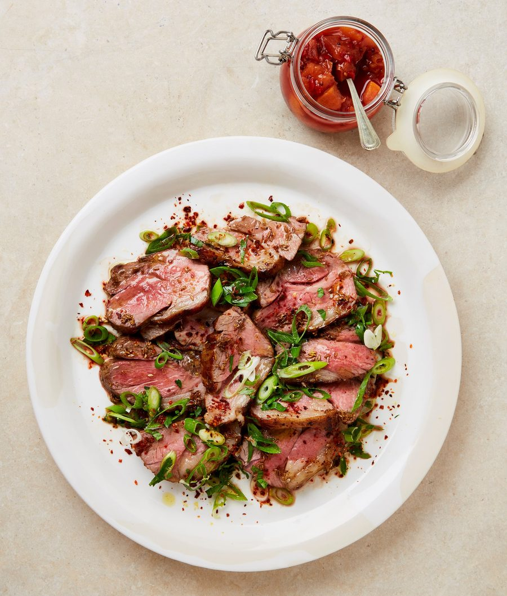

Lamb rump with peach chutney and cumin oil

This lightly spiced, sweet and savoury chutney is great with cold meats or a cheese board. If you like, make extra and store in airtight jars for up to a week. Swap the rump for chops or any other cut that you can easily grill or flash cook.
For the peach chutney
For the lamb
Put a small saute pan on a medium-high heat and add the sugar, vinegar, chilli and ginger. Stir and cook for four minutes until syrupy and bubbling. Add the peaches, black mustard and a quarter-teaspoon of salt, and cook for another five minutes, until softened but not completely broken down. Set aside to cool and thicken.
To marinate the lamb, put the lamb, garlic and lemon juice in a bowl with one and a half teaspoons of salt and a good grind of pepper. Mix well and marinate for an hour, or overnight.
Heat the oven to 240C (220C fan)/465F/gas 9. Rub a tablespoon of the oil into the lamb and put in a medium frying pan on medium-high heat. Lay in the lamb fat side down and cook for three to four minutes, until deeply golden. Now sear the lamb for two to three minutes on each side, then transfer to the oven for six minutes – this will cook the rumps to medium-rare, so give them plus or minus two minutes in the oven depending on your desired doneness. Remove from the oven and set aside to rest for 10 minutes.
Meanwhile, heat the remaining one and a half tablespoons of oil in a small saucepan on medium-high heat and, once hot, add the cumin and take off the heat. Stir in a pinch of salt and leave to cool.
Mix the spring onion, parsley and lemon zest in a small bowl and set aside.
Cut the lamb at an angle into 1½cm-thick slices and arrange on a platter. Drizzle the cumin oil over the top, then sprinkle with the aleppo chilli and three-quarters of a teaspoon of flaky salt. Scatter the spring onion salsa on top and serve with the peach chutney on the side.